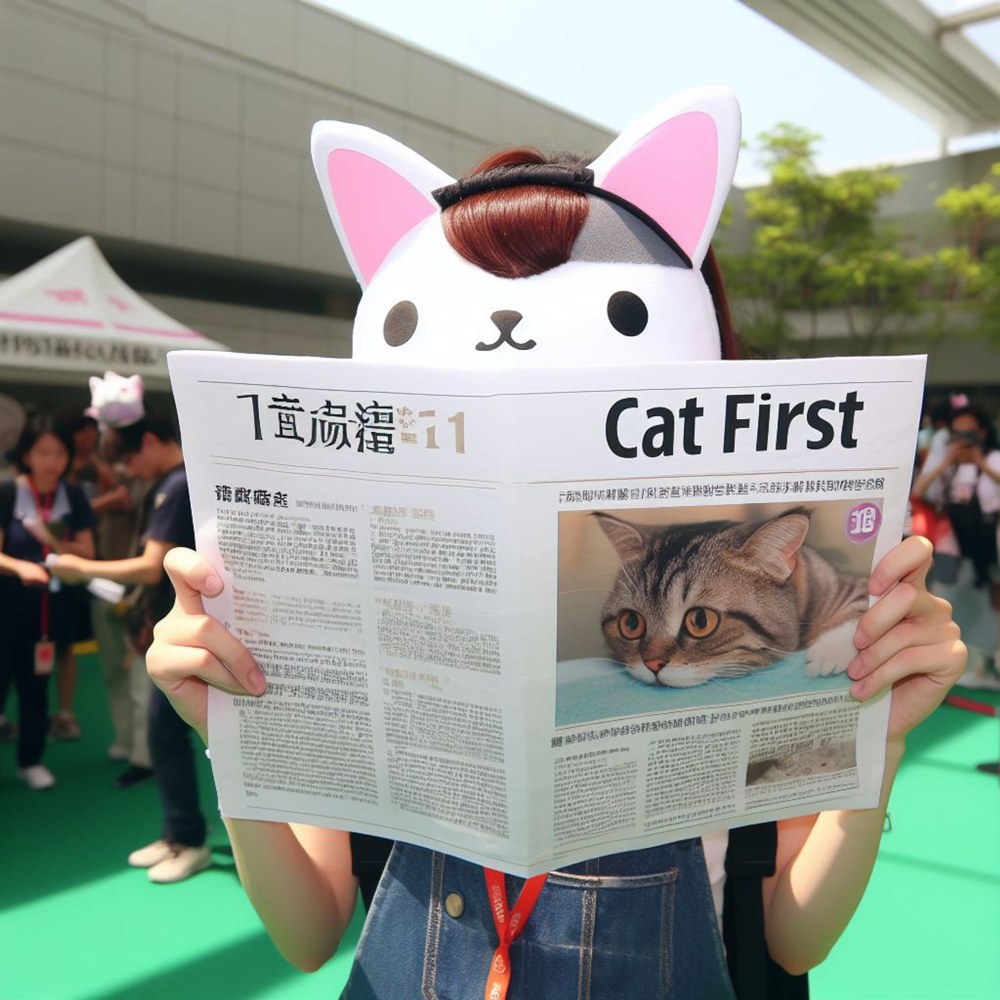
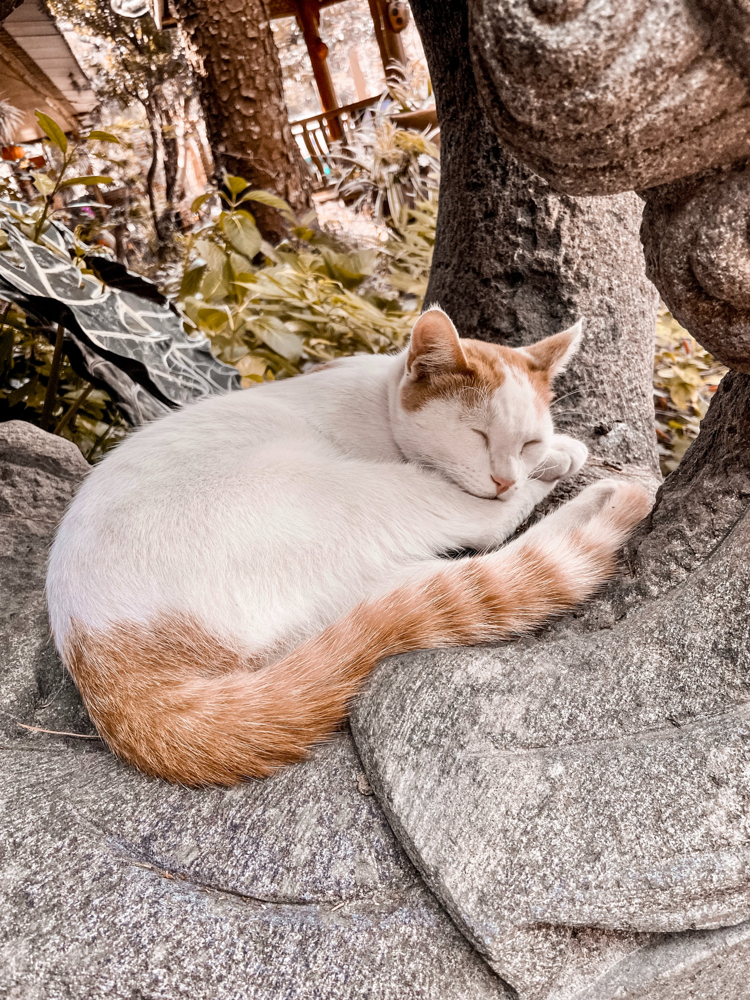

最新消息
參與台北寵物論壇，爭取貓咪友善環境
12/26
炎炎夏日的周六，我走進了台北寵物論壇，帶著一副貓耳髮箍，決定要全力宣傳「貓咪至上」的理念！我相信，我們的都市中，每一隻貓咪都應該有自己的VIP休憩空間。
掃街模式開啟！帶著你的貓耳，來和我一起走！

12/24
街上氣氛真的很棒，從小孩到大人，甚至有些狗狗朋友都帶著貓耳來找我握手，真的太可愛了！這次的活動不僅讓我看到大家的熱情，更加堅定了我推進「貓咪友善環境」政策的決心。
喵喵減肥班，成果發表會！
12/20
為了讓更多人知道貓咪體重過重對貓身不好，我們開辦了喵喵減肥班，成果發表以「模特兒走秀」形式呈現，讓更多人意識到貓身健康有多麼重要！
寵物友善咖啡市集
12/15
讓「咖啡」與「寵物」蹦出最新鮮的市集組合，歡迎帶著你心愛的寵物們來到這邊，除了可以一同享受咖啡香所帶來的色香味俱全饗宴，也可以與各個寵物與主人們互相交流。
與薩卡同行，浪貓關懷
12/03
在看不見的角落裡，有那麼一群人為了浪浪，願意耗費自己的金錢、心力，甚至投入大量的時間，都是為了讓浪浪有個美好的家，薩卡舉辦的全台中途贈糧活動正式開跑，並努力保護流浪貓、改善飼養環境，協助毛孩們有飯吃，有機會成就一個愛他的家！
彈跳甲魚湯之長泳訓練營

11/28
泳渡薩卡島是很多人的人生清單！是台灣一年一度的盛事，為了迎接泳渡薩卡島的盛事，薩卡舉辦訓練營方便夥伴一同來督促彼此的體力和意志力，讓我們一起來和薩卡游泳吧！畢竟有好的體力，才能當好鏟屎官！